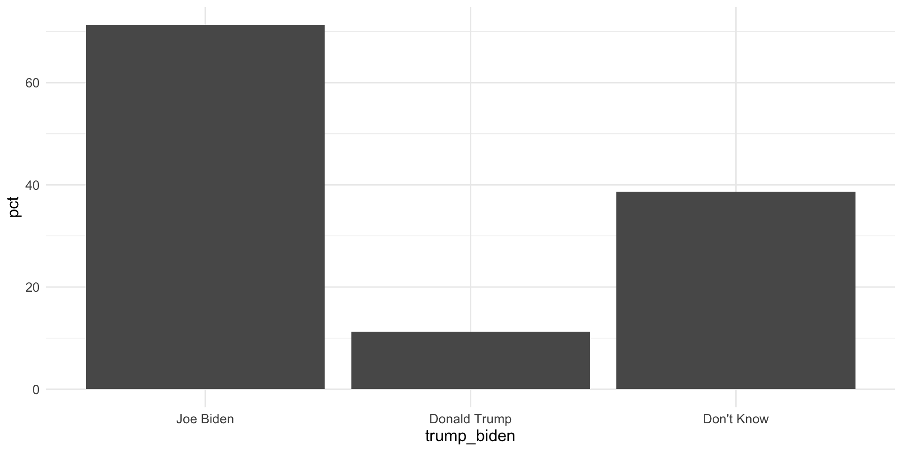
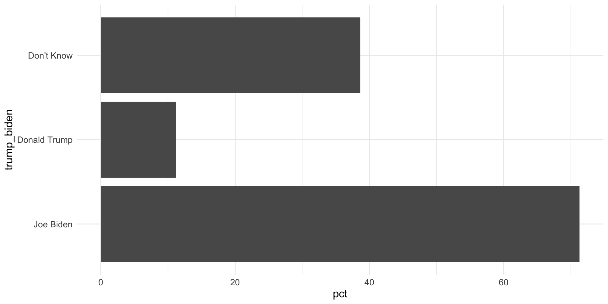
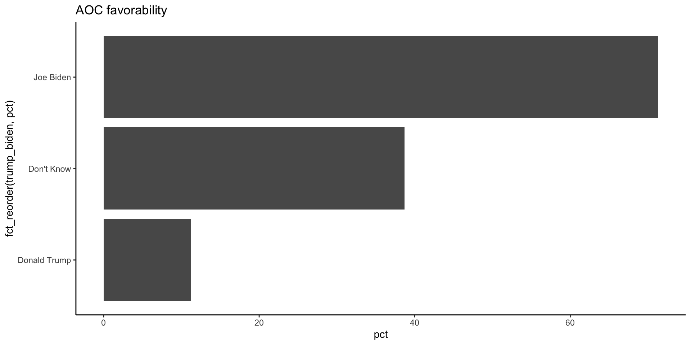
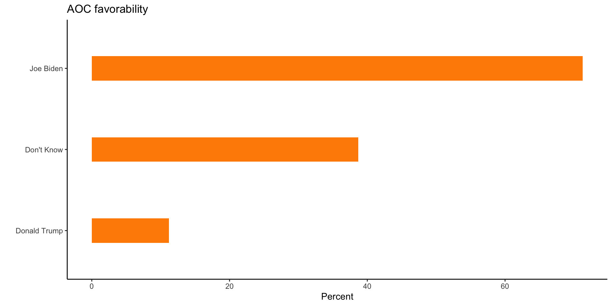
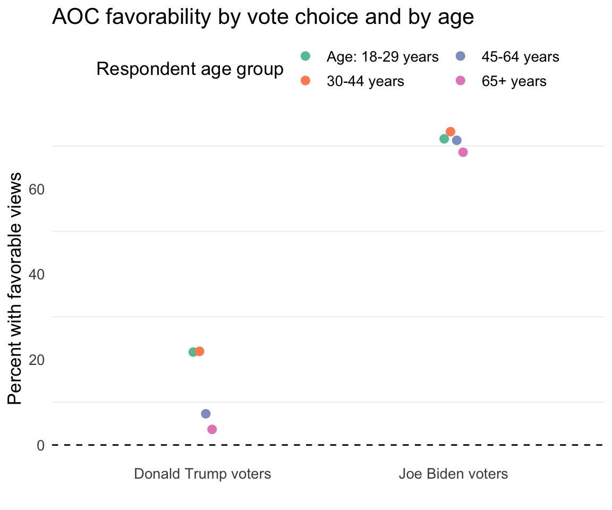
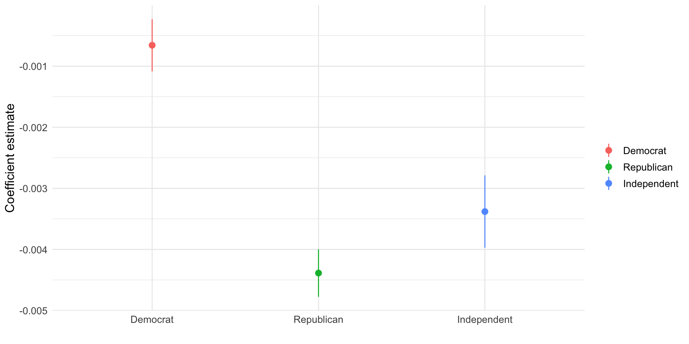
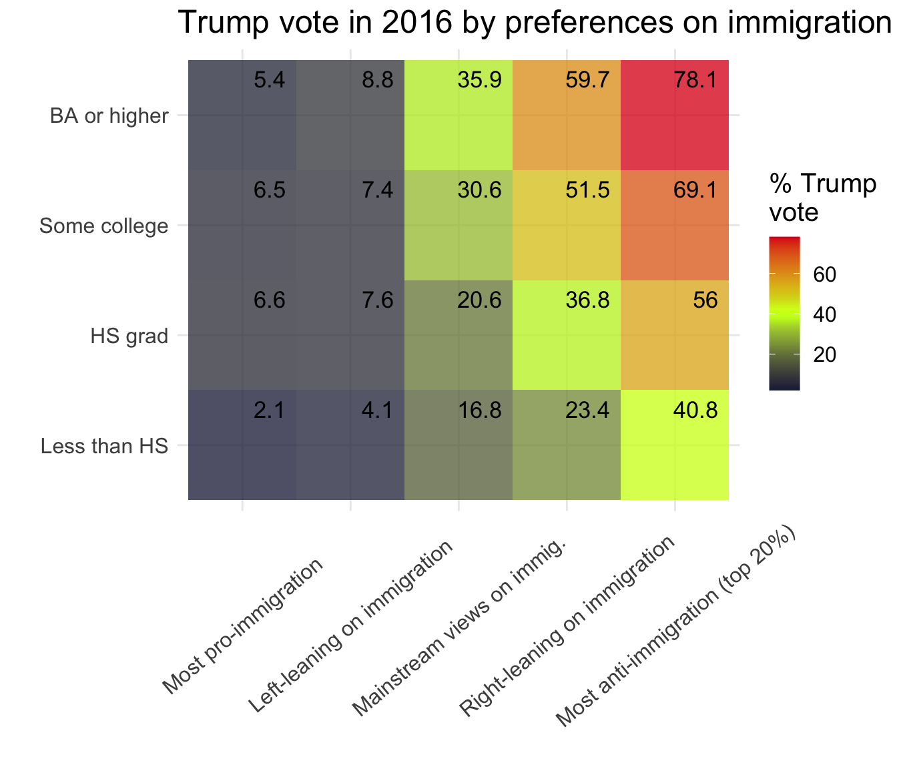

ggplot lesson
Nationscape surveys
List of variables
[1] 62408 889 [1] "response_id" "start_date"
[3] "right_track" "economy_better"
[5] "interest" "registration"
[7] "news_sources_facebook" "news_sources_cnn"
[9] "news_sources_msnbc" "news_sources_fox"
[11] "news_sources_network" "news_sources_localtv"
[13] "news_sources_telemundo" "news_sources_npr"
[15] "news_sources_amtalk" "news_sources_new_york_times"
[17] "news_sources_local_newspaper" "news_sources_other"
[19] "news_sources_other_TEXT" "pres_approval"
[21] "vote_intention" "vote_2016"
[23] "vote_2016_other_text" "consider_trump"
[25] "not_trump" "primary_party"
[27] "group_favorability_whites" "group_favorability_blacks"
[29] "group_favorability_latinos" "group_favorability_asians"
[31] "group_favorability_christians" "group_favorability_socialists"
[33] "group_favorability_muslims" "group_favorability_labor_unions"
[35] "group_favorability_the_police" "group_favorability_undocumented"
[37] "group_favorability_lgbt" "group_favorability_republicans"
[39] "group_favorability_democrats" "cand_favorability_trump"
[41] "cand_favorability_obama" "cand_favorability_cortez"
[43] "cand_favorability_biden" "cand_favorability_harris"
[45] "cand_favorability_buttigieg" "cand_favorability_warren"
[47] "cand_favorability_sanders" "cand_favorability_pence"
[49] "dem_vote_intent" "dem_vote_intent_TEXT"
[51] "rank_dems_1" "rank_dems_2"
[53] "rank_dems_3" "replace_trump"
[55] "house_intent" "senate_intent"
[57] "governor_intent" "trump_biden"
[59] "trump_sanders" "trump_harris"
[61] "trump_warren" "trump_buttigieg"
[63] "trump_booker" "trump_castro"
[65] "trump_gabbard" "trump_gillibrand"
[67] "trump_orourke" "pence_biden"
[69] "pence_buttigieg" "pence_harris"
[71] "pence_sanders" "pence_warren"
[73] "cand_truth_donald_trump" "cand_truth_elizabeth_warren"
[75] "cand_truth_joe_biden" "cand_truth_bernie_sanders"
[77] "cand_truth_pete_buttigieg" "cand_truth_kamala_harris"
[79] "cand_facts_donald_trump" "cand_facts_elizabeth_warren"
[81] "cand_facts_joe_biden" "cand_facts_bernie_sanders"
[83] "cand_facts_pete_buttigieg" "cand_facts_kamala_harris"
[85] "racial_attitudes_tryhard" "racial_attitudes_generations"
[87] "racial_attitudes_marry" "racial_attitudes_date"
[89] "gender_attitudes_maleboss" "gender_attitudes_logical"
[91] "gender_attitudes_opportunity" "gender_attitudes_complain"
[93] "discrimination_blacks" "discrimination_whites"
[95] "discrimination_muslims" "discrimination_christians"
[97] "discrimination_women" "discrimination_men"
[99] "sen_knowledge" "sc_knowledge"
[101] "pid3" "pid7_legacy"
[103] "strength_democrat" "strength_republican"
[105] "lean_independent" "ideo5"
[107] "employment" "employment_other_text"
[109] "foreign_born" "language"
[111] "religion" "religion_other_text"
[113] "is_evangelical" "orientation_group"
[115] "in_union" "household_gun_owner"
[117] "wall" "cap_carbon"
[119] "environment" "guns_bg"
[121] "mctaxes" "estate_tax"
[123] "raise_upper_tax" "college"
[125] "abortion_waiting" "abortion_never"
[127] "abortion_conditions" "late_term_abortion"
[129] "abortion_insurance" "guaranteed_jobs"
[131] "green_new_deal" "gun_registry"
[133] "immigration_separation" "immigration_system"
[135] "immigration_wire" "impeach_trump"
[137] "israel" "marijuana"
[139] "maternityleave" "medicare_for_all"
[141] "military_size" "minwage"
[143] "muslimban" "oil_and_gas"
[145] "reparations" "right_to_work"
[147] "ten_commandments" "trade"
[149] "trans_military" "uctaxes2"
[151] "vouchers" "gov_insurance"
[153] "public_option" "health_subsidies"
[155] "path_to_citizenship" "dreamers"
[157] "deportation" "ban_guns"
[159] "ban_assault_rifles" "limit_magazines"
[161] "age" "gender"
[163] "census_region" "hispanic"
[165] "race_ethnicity" "household_income"
[167] "education" "state"
[169] "congress_district" "weight"
[171] "wave" "extra_ban_discr_race"
[173] "extra_ban_discr_gend" "extra_ban_discr_age"
[175] "extra_women_juries" "extra_driver_insure"
[177] "extra_helmet_moto" "extra_tax_cigarettes"
[179] "extra_school_silence" "extra_ban_corp_pun"
[181] "rep_vote_prim" "rep_vote_prim_TEXT"
[183] "group_favorability_evangelicals" "group_favorability_white_men"
[185] "fc_smallgov" "fc_trad_val"
[187] "statements_protect_traditions" "statements_defense_burden"
[189] "statements_trade_effects" "statements_christianity_assault"
[191] "statements_gender_identity" "statements_american_loss"
[193] "statements_imm_assimilate" "statements_gun_rights"
[195] "statements_confront_china" "statements_foreign_interests"
[197] "abortion_any_time" "abolish_priv_insurance"
[199] "china_tariffs" "criminal_immigration"
[201] "immigration_insurance" "extra_group_favor_democrats"
[203] "extra_group_favor_republicans" "primary_sen_barrasso"
[205] "primary_sen_blackburn" "primary_sen_blunt"
[207] "primary_sen_cassidy" "primary_sen_collins"
[209] "primary_sen_cornyn" "primary_sen_cotton"
[211] "primary_sen_daines" "primary_sen_ernst"
[213] "primary_sen_gardner" "primary_sen_graham"
[215] "primary_sen_hoeven" "primary_sen_hydesmith"
[217] "primary_sen_inhofe" "primary_sen_lee"
[219] "primary_sen_mcconnell" "primary_sen_mcsally"
[221] "primary_sen_moorecapito" "primary_sen_moran"
[223] "primary_sen_perdue" "primary_sen_portman"
[225] "primary_sen_risch" "primary_sen_rounds"
[227] "primary_sen_rubio" "primary_sen_sasse"
[229] "primary_sen_shelby" "primary_sen_sullivan"
[231] "primary_sen_tillis" "primary_sen_toomey"
[233] "primary_sen_young" "primary_sen_boozman"
[235] "primary_sen_braun" "primary_sen_cramer"
[237] "primary_sen_crapo" "primary_sen_cruz"
[239] "primary_sen_fischer" "primary_sen_grassley"
[241] "primary_sen_hawley" "primary_sen_lankford"
[243] "primary_sen_murkowski" "primary_sen_neelykennedy"
[245] "primary_sen_paul" "primary_sen_romney"
[247] "primary_sen_scott_rick" "primary_sen_scott_tim"
[249] "primary_sen_thune" "primary_sen_wicker"
[251] "extra_group_favor_demcong" "extra_group_favor_repcong"
[253] "extra_group_identity_race" "extra_group_identity_partyID"
[255] "extra_group_id_relig_belief" "extra_group_identity_local_comm"
[257] "extra_group_identity_close_fam" "extra_group_id_being_american"
[259] "extra_n_children" "extra_n_adults"
[261] "extra_housing" "extra_party_ideo_rate_dem"
[263] "extra_party_ideo_rate_rep" "extra_party_ideo_dem_desire"
[265] "extra_party_ideo_rep_desire" "extra_foreign_interf"
[267] "extra_foreign_help" "extra_foreign_effect"
[269] "vote_2012" "vote_2012_other_text"
[271] "extra_dem_prim" "extra_rep_prim"
[273] "extra_dem_prim_cand" "extra_rep_prim_cand"
[275] "extra_cong_race_white" "extra_cong_race_black_or_africa"
[277] "extra_cong_race_hispanic_or_lat" "extra_cong_race_asian"
[279] "extra_cong_party_democrats" "extra_cong_party_republicans"
[281] "extra_county_imm" "extra_neighb_race_white"
[283] "extra_neighb_race_black_or_afri" "extra_neighb_race_hispanic_or_l"
[285] "extra_neighb_race_asian" "extra_neighb_party_democrats"
[287] "extra_neighb_party_republicans" "extra_neighb_imm"
[289] "extra_trump_cares_me" "extra_trump_cares_poor"
[291] "extra_trump_cares_mid_class" "extra_trump_cares_wealthy"
[293] "extra_biden_cares_me" "extra_biden_cares_poor"
[295] "extra_biden_cares_mid_class" "extra_biden_cares_wealthy"
[297] "extra_warren_cares_me" "extra_warren_cares_poor"
[299] "extra_warren_cares_mid_class" "extra_warren_cares_wealthy"
[301] "extra_contact_dem" "extra_contact_rep"
[303] "extra_contact_third" "extra_contact_nonpart"
[305] "extra_cont_dem_mode_in_person" "extra_cont_dem_mode_phone_call"
[307] "extra_cont_dem_mode_email_or_te" "extra_cont_dem_mode_letter_or_p"
[309] "extra_cont_rep_mode_in_person" "extra_cont_rep_mode_phone_call"
[311] "extra_cont_rep_mode_email_or_te" "extra_cont_rep_mode_letter_or_p"
[313] "extra_cont_third_mode_in_person" "extra_cont_third_mode_phone_cal"
[315] "extra_cont_third_mode_email_or_" "extra_cont_third_mode_letter_or"
[317] "extra_cont_nopart_mode_in_perso" "extra_cont_nopart_mode_phone_ca"
[319] "extra_cont_nopart_mode_email_or" "extra_cont_nopart_mode_letter_o"
[321] "group_favorability_jews" "discrimination_jews"
[323] "saudi_arabia" "egypt"
[325] "pid7" "extra_priorities_deficit"
[327] "extra_priorities_crime" "extra_priorities_economy"
[329] "extra_priorities_immigration" "extra_priorities_healthcare"
[331] "extra_deficit_change" "extra_deficit_raise_taxes"
[333] "extra_deficit_cut_military" "extra_deficit_cut_medicaid"
[335] "extra_deficit_cut_medicare" "extra_voting_right"
[337] "extra_vote_fine" "extra_civic_duty"
[339] "extra_gov_rep" "extra_gov_confidence"
[341] "extra_combat_vote_suppression" "extra_win_elections"
[343] "extra_right_notvote" "extra_uneducated_vote"
[345] "extra_punish_vote" "extra_lose_elections"
[347] "extra_excessive_gov_fines" "cand_favorability_bloomberg"
[349] "trump_bloomberg" "extra_trump_economy"
[351] "extra_trump_health" "extra_trump_foreign"
[353] "extra_trump_immigration" "extra_trump_trade"
[355] "extra_trump_race" "extra_trump_taxes"
[357] "extra_trump_climate" "extra_trump_budget"
[359] "primary_party_past" "dem_vote_alreadyvoted"
[361] "dem_vote_already_other_text" "rep_vote_prim_prospect"
[363] "extra_race_white_you" "extra_race_white_mom"
[365] "extra_race_white_dad" "extra_race_black_you"
[367] "extra_race_black_mom" "extra_race_black_dad"
[369] "extra_race_latino_you" "extra_race_latino_mom"
[371] "extra_race_latino_dad" "extra_race_asian_you"
[373] "extra_race_asian_mom" "extra_race_asian_dad"
[375] "extra_race_am_indian_you" "extra_race_am_indian_mom"
[377] "extra_race_am_indian_dad" "extra_race_pi_you"
[379] "extra_race_pi_mom" "extra_race_pi_dad"
[381] "extra_race_middle_eastern_you" "extra_race_middle_eastern_mom"
[383] "extra_race_middle_eastern_dad" "extra_race_other_you"
[385] "extra_race_other_mom" "extra_race_other_dad"
[387] "extra_race_dk_you" "extra_race_dk_mom"
[389] "extra_race_dk_dad" "extra_ideo_trump"
[391] "extra_ideo_warren" "extra_ideo_buttigieg"
[393] "extra_ideo_sanders" "extra_ideo_bloomberg"
[395] "extra_ideo_klobuchar" "extra_ideo_biden"
[397] "extra_pop_latinos" "extra_pop_women"
[399] "extra_pop_young" "extra_pop_afam"
[401] "extra_pop_men" "extra_sanders_cares_me"
[403] "extra_sanders_cares_poor" "extra_sanders_cares_mid_class"
[405] "extra_sanders_cares_wealthy" "extra_bloomb_cares_me"
[407] "extra_bloomb_cares_poor" "extra_bloomb_cares_mid_class"
[409] "extra_bloomb_cares_wealthy" "dem_vote_intent_other_text"
[411] "cand_favorability_klobuchar" "cand_favorability_abrams"
[413] "extra_prescriptions" "extra_covid_cancel_meet"
[415] "extra_covid_close_business" "extra_covid_close_schools"
[417] "extra_covid_work_home" "extra_covid_restrict_travel"
[419] "extra_covid_restrict_home" "extra_covid_social_distance"
[421] "extra_covid_delay_elections" "extra_covid_testing"
[423] "extra_covid_gov_travel" "extra_covid_increase_gov_unemp"
[425] "extra_covid_gov_health" "extra_covid_gov_sick_leave"
[427] "extra_covid_gov_interest" "extra_covid_gov_cash"
[429] "extra_corona_concern" "extra_sick_you"
[431] "extra_sick_family" "extra_sick_work"
[433] "extra_sick_other" "extra_covid_wash"
[435] "extra_covid_cancel_travel" "extra_covid_stock_goods"
[437] "extra_covid_visit_family" "extra_covid_quarantine"
[439] "extra_covid_hospital" "extra_income_corona"
[441] "extra_trump_corona" "dem_vote_past"
[443] "dem_vote_past_other_text" "rep_vote_past"
[445] "rep_vote_past_TEXT" "extra_worry_finances"
[447] "extra_savings" "extra_prepare_money"
[449] "extra_lost_job" "extra_spouse_lost_job"
[451] "extra_mortgage_difficulty" "extra_stud_loan_difficulty"
[453] "extra_car_pay_difficulty" "extra_drop_income"
[455] "extra_satisf_job" "extra_satisf_income"
[457] "extra_satisf_savings" "extra_satisf_debt"
[459] "discrimination_asians" "extra_rumor_conceal"
[461] "extra_rumor_lab" "extra_rumor_politics"
[463] "extra_rumor_vaccine" "extra_rumor_treatment"
[465] "extra_rumor_infect_under30" "extra_rumor_safe_under30"
[467] "extra_gub_corona" "extra_local_corona"
[469] "extra_covid_airlines" "extra_covid_small_business"
[471] "pence_bloomberg" "extra_tolerance_econ"
[473] "extra_return_restaurant" "extra_return_sports"
[475] "extra_return_child_school" "extra_return_concert"
[477] "extra_return_fly" "extra_return_shop"
[479] "extra_return_public_transit" "extra_return_movies"
[481] "extra_return_dinner" "extra_return_dentist"
[483] "extra_return_haircut" "extra_return_funeral"
[485] "extra_return_wedding" "extra_return_church"
[487] "extra_return_school" "extra_corona_deaths"
[489] "extra_corona_lift" "extra_corona_relig"
[491] "extra_timeline_business" "extra_timeline_schools"
[493] "extra_timeline_gatherings" "extra_timeline_stayhome"
[495] "extra_timeline_elections" "extra_covid_wear_mask"
[497] "extra_covid_worn_mask" "extra_covid_socialize_distance"
[499] "extra_covid_socialize_no_dist" "extra_covid_nonessential_goods"
[501] "vote_2020_v1" "vote_2020_other_text"
[503] "rep_prim_vote" "rep_prim_vote_TEXT"
[505] "dem_prim_vote" "dem_prim_vote_TEXT"
[507] "extra_dem_violence" "extra_ind_violence"
[509] "extra_rep_violence" "extra_rep_victory"
[511] "extra_ind_victory" "extra_dem_victory"
[513] "extra_govern_leader" "extra_govern_army"
[515] "extra_govern_democracy" "extra_protest"
[517] "vote_2020" "vote_2020_lean"
[519] "group_favorability_blm" "elect_conf_conduct"
[521] "elect_conf_vote" "consider_biden"
[523] "not_biden" "extra_corona_cong"
[525] "cand_favorability_rice" "cand_favorability_bass"
[527] "extra_credit_card" "extra_vote_ever"
[529] "extra_vote_mail_past" "extra_vote_mail_2020"
[531] "extra_ideo_rate_trump" "extra_ideo_rate_biden"
[533] "extra_ideo_rate_harris" "extra_ideo_rate_pence"
[535] "extra_dnc_watch" "extra_rnc_watch"
[537] "extra_usps_impact" "extra_vacc_flu"
[539] "extra_vacc_covid" "extra_vacc_reason_safety"
[541] "extra_vacc_reason_never" "extra_vacc_reason_hadit"
[543] "extra_vacc_reason_cost" "extra_vacc_reason_dontcare"
[545] "extra_vacc_reason_sick" "extra_vacc_reason_time"
[547] "extra_vacc_reason_noreason" "extra_vacc_reason_other"
[549] "extra_vacc_reason_wontwork" "extra_vacc_reason_immune"
[551] "extra_vacc_reason_willget" "extra_vacc_reason_other_text"
[553] "extra_age_children_0_5yr" "extra_age_children_6_10yr"
[555] "extra_age_children_11_13yr" "extra_age_children_14_18yr"
[557] "extra_biden_cares_covid" "extra_biden_cares_jobs"
[559] "extra_trump_cares_covid" "extra_trump_cares_jobs"
[561] "extra_vote_mail_retr" "vote_2020_clinton"
[563] "vote_2020_clinton_other_text" "vote_2020_clinton_ln"
[565] "extra_trump_crime" "vote_2020_retro"
[567] "vote_2020_retro_other_text" "extra_covid_require_mask"
[569] "covid_support_mask" "covid_pres_mask"
[571] "covid_support_close" "covid_pres_close"
[573] "elect_loser_concede" "vote_intention_retro"
[575] "who_won" "who_won_other_text"
[577] "primary_party_retro" "group_favorability_trump_s"
[579] "group_favorability_biden_s" "house_intent_retro"
[581] "senate_intent_retro" "governor_intent_retro"
[583] "ga_runoff_intent" "ga_special_intent"
[585] "discrimination_latinos" "married"
[587] "elect_conf_conduct_retro" "elect_conf_vote_retro"
[589] "elect_exp_id" "elect_exp_polling"
[591] "elect_exp_reg_deadline" "elect_exp_harassed"
[593] "elect_exp_name_reg" "elect_exp_no_mail"
[595] "elect_exp_line" "switchers_text_biden"
[597] "switchers_text_trump" "weight_2020"
[599] "weight_both" "work_location"
[601] "pol_rep_minwage" "pol_rep_guns_bg"
[603] "pol_rep_uctaxes2" "pol_rep_public_option"
[605] "pol_rep_environment" "pol_rep_ten_commandments"
[607] "pol_rep_abortion_waiting" "pol_rep_immigration_wire"
[609] "pol_rep_estate_tax" "pol_rep_right_to_work"
[611] "pol_dem_minwage" "pol_dem_guns_bg"
[613] "pol_dem_uctaxes2" "pol_dem_public_option"
[615] "pol_dem_environment" "pol_dem_ten_commandments"
[617] "pol_dem_abortion_waiting" "pol_dem_immigration_wire"
[619] "pol_dem_estate_tax" "pol_dem_right_to_work"
[621] "pence_president" "capitol_approval"
[623] "capitol_trump_approv" "capitol_trump_more"
[625] "twitter_ban" "Jabortion_latepermit_DISAGREE"
[627] "Jabortion_never_agree" "Jabortion_mostlypermit_DISAGREE"
[629] "Jguns_bg_DISAGREE" "Jbanguns_DISAGREE"
[631] "Jban_AR_DISAGREE" "Jlimit_magazines_DISAGREE"
[633] "Jabortion_waiting_agree" "Jabortion_anytime_DISAGREE"
[635] "Jgun_registry_DISAGREE" "Jabortion_insdecline_agree"
[637] "Jten_commandments_agree" "Jtrans_military_DISAGREE"
[639] "Jvouchers_agree" "culture_sum_major"
[641] "culture_full_theta" "culture_factor"
[643] "Jgov_ins_agree" "Jpublic_option_agree"
[645] "Jhealth_subsidies_agree" "Jabolish_priv_insurance"
[647] "Jraise_upper_tax_agree" "Jmctaxes_agree"
[649] "Jestate_NOT_repleal" "Jcollege_agree"
[651] "Jcap_agree" "Jgreen_tech_agree"
[653] "Jguaranteedjob_agree" "Jgreen_new_deal_agree"
[655] "Jmaternityleave_agree" "Jmedicare_agree"
[657] "Jminwage_agree" "Joil_drill_dereg_DISAGREE"
[659] "Jreparations_agree" "Jright2W_DISAGREE"
[661] "Jtrade_limit_agree" "Juctaxes2_agree"
[663] "Jchina_tariffs_agree" "econ_sum_major"
[665] "z2econMajor8" "econ_full_theta"
[667] "econ_cons_theta" "Jdreamers_path_DISAGREE"
[669] "Jpath4all_DISAGREE" "Jwall_agree"
[671] "Jdeportation_agree" "Jimmigration_sep_agree"
[673] "Jimmigration_system_agree" "Jimmigration_wire_agree"
[675] "Jmuslimban_agree" "Jimmigration_insurance_DISAGREE"
[677] "Jimmigration_felony_agree" "immig_full_theta"
[679] "immig_sum_major" "z2immig4"
[681] "Jisrael_agree" "Jmarijuana_agree"
[683] "Jmilitarysize_agree" "Jimpeach_agree"
[685] "cov_airlines_support" "cov_govcash_support"
[687] "cov_spendingpoor_support" "cov_unemployment_support"
[689] "cov_reduceinterest_support" "cov_localbusiness_support"
[691] "covid6_scale" "covid6_liberalism"
[693] "z2covid6_liberalism" "covid6_liberalism_by1SD"
[695] "racial_attitudes_tryhard_rev" "racial_attitudes_marry_rev"
[697] "racial4_liberalism" "racial4_C"
[699] "z2racial4_C" "gender_attitudes_maleboss_rev"
[701] "gender_attitudes_complain_rev" "gender_att3"
[703] "sexism_att3" "gender_REC_women_complain"
[705] "gender_REC_woman_boss" "gender_REC_opportunity_nogood"
[707] "gender_REC_logcal_not" "sc_knowledge_correct"
[709] "news_consumption" "news_consumption_count"
[711] "newsconsumption_factor" "age_group"
[713] "Men" "White"
[715] "Black" "Asian"
[717] "Hispanic" "college_grad"
[719] "white_noncollege" "educ_category"
[721] "inc_group" "Democrat"
[723] "Republican" "emp_fulltime"
[725] "ADV_nojob" "ADV_disabled"
[727] "ADV_any" "trade_positive_disagree"
[729] "trump16" "clinton16"
[731] "novote2016" "voted2016"
[733] "obama12" "romney12"
[735] "vote_2016_rec" "registered"
[737] "intendsToVote" "ineligibleToVote"
[739] "eligibleToVote" "biden20"
[741] "warren20" "sanders20"
[743] "buttigieg20" "harris20"
[745] "wouldvoteforany_BWS" "trump_v_biden"
[747] "biden2Pvote_intent" "trump2Pvote_intent"
[749] "warren2Pvote_intent" "sanders2Pvote_intent"
[751] "buttigieg2Pvote_intent" "bloomberg2Pvote_intent"
[753] "vote2020cat" "trump16toBiden2020"
[755] "dem_perceived_very_lib" "rep_perceived_very_cons"
[757] "trump_strogapprove" "trump_approve"
[759] "obama_favorabe" "biden_favorabe"
[761] "harris_favorabe" "warren_favorabe"
[763] "aoc_Favorable" "trump_consider"
[765] "econ_better" "econ_betterORsame"
[767] "votcat" "vot1"
[769] "vot2" "vot3"
[771] "dem_trump16" "dem_novote2016"
[773] "dem_clinton2016" "dem_pref_biden2020"
[775] "dem_pref_pete2020" "dem_pref_sanders2020"
[777] "dem_pref_warren2020" "dem_pref_harris2020"
[779] "dem_pref_other2020" "support_warren_or_sanders"
[781] "dem_biden2020_top2" "econ_cons_theta_by1SD"
[783] "econ_full_theta_by1SD" "culture_full_theta_by1SD"
[785] "immig_full_theta_by1SD" "racial4_C_by1SD"
[787] "gender_att3_by1SD" "zt1_econ_full_theta"
[789] "zt1_culture_full_theta" "zt1_immig_full_theta"
[791] "zt1_econ_cons_theta" "zt1_racial4_C"
[793] "zt1_gender_att3" "zt1_sexism_att3"
[795] "asians_favorable" "blacks_favorable"
[797] "whites_favorable" "democrats_favorable"
[799] "labor_unions_favorable" "latinos_favorable"
[801] "lgbt_favorable" "muslims_favorable"
[803] "republicans_favorable" "socialists_favorable"
[805] "the_police_favorable" "undocumented_favorable"
[807] "white_men_favorable" "christians_favorable"
[809] "evangelicals_favorable" "jews_favorable"
[811] "asians_favor_withDK" "blacks_favor_withDK"
[813] "whites_favor_withDK" "democrats_favor_withDK"
[815] "labor_unions_favor_withDK" "latinos_favor_withDK"
[817] "lgbt_favor_withDK" "muslims_favor_withDK"
[819] "republicans_favor_withDK" "socialists_favor_withDK"
[821] "the_police_favor_withDK" "undocumented_favor_withDK"
[823] "white_men_favor_withDK" "christians_favor_withDK"
[825] "evangelicals_favor_withDK" "jews_favor_withDK"
[827] "asians_unfavor_withDK" "blacks_unfavor_withDK"
[829] "whites_unfavor_withDK" "democrats_unfavor_withDK"
[831] "labor_unions_unfavor_withDK" "latinos_unfavor_withDK"
[833] "lgbt_unfavor_withDK" "muslims_unfavor_withDK"
[835] "republicans_unfavor_withDK" "socialists_unfavor_withDK"
[837] "the_police_unfavor_withDK" "undocumented_unfavor_withDK"
[839] "white_men_unfavor_withDK" "christians_unfavor_withDK"
[841] "evangelicals_unfavor_withDK" "jews_unfavor_withDK"
[843] "s1" "s2"
[845] "s3" "cd"
[847] "Democrat_w_leaners" "Republican_w_leaners"
[849] "pid7_0_to_1" "date"
[851] "monthyear" "week"
[853] "MY" "quarter"
[855] "trump2P_2020retro" "trump2P_2020plan"
[857] "approval_trump_scale" "favorabilityDems"
[859] "favorabilityReps" "affPol"
[861] "unemployed" "evanglical"
[863] "fav_blm" "unfav_blm"
[865] "unfav_dems" "unfav_reps"
[867] "fav_dems" "fav_reps"
[869] "fav_Muslims" "unfav_Muslims"
[871] "unfav_Asians" "unfav_Blacks"
[873] "unfav_Latinos" "unfav_Undocumented"
[875] "unfav_police" "unfav_socialists"
[877] "fav_socialists" "fav_Police"
[879] "fav_Police_amongHeardEnough" "Liberal"
[881] "Conservative" "age_group_newbaseline"
[883] "ideo5_newbaseline" "copartisan"
[885] "quarteryear" "econ_quintile"
[887] "culture_quintile" "immig_quintile"
[889] "racial_quintile" We subset the data to the first 10 waves
# A tibble: 6 × 2
week n
<date> <int>
1 2019-07-14 3906
2 2019-07-21 5990
3 2019-07-28 6236
4 2019-08-04 6082
5 2019-08-11 5097
6 2019-08-18 7685Favorability of AOC
Toplines vs. cross-tabs
Favorability of AOC
# A tibble: 3 × 5
Response Frequency Percent `Valid Percent` `Cumulative Percent`
<fct> <dbl> <dbl> <dbl> <dbl>
1 0 20364. 32.6 55.5 55.5
2 1 16303. 26.1 44.5 100
3 (Missing) 25741. 41.2 NA NA Favorability by vote choice (intent)
# A tibble: 6 × 4
trump_biden aoc_Favorable pct n
<fct> <fct> <dbl> <dbl>
1 Joe Biden 0 28.7 18881.
2 Joe Biden 1 71.3 18881.
3 Donald Trump 0 88.8 14695.
4 Donald Trump 1 11.2 14695.
5 Don't Know 0 61.3 2989.
6 Don't Know 1 38.7 2989.Favorability by vote choice (intent)
Favorability by vote choice (intent)
Favorability by vote choice (intent)
What if we had not specified format = "wide"?
Favorability by vote choice (intent)
Favorability by vote choice (intent)
Favorability by vote choice (intent)
Favorability by vote choice (intent)

Favorability by vote choice (intent)
Favorability by vote choice (intent)
Favorability by vote choice (intent)
Favorability by vote choice (intent)
pollster::crosstab(df = a, x = trump_biden,
y = aoc_Favorable,weight = weight,format = "long") %>%
filter(aoc_Favorable==1) %>%
ggplot(aes(y= fct_reorder(trump_biden,pct),
x = pct)) + geom_col(width = .3,fill="darkorange") + theme_classic() +
labs(x="Percent", y = "", title = "AOC favorability") +
geom_label(aes(label=pct))Favorability by vote choice (intent)
pollster::crosstab(df = a, x = trump_biden,
y = aoc_Favorable,weight = weight,format = "long") %>%
filter(aoc_Favorable==1) %>%
ggplot(aes(y= fct_reorder(trump_biden,pct),
x = pct)) + geom_col(width = .3,fill="darkorange") + theme_classic() +
labs(x="Percent", y = "", title = "AOC favorability") +
geom_label(aes(label=round(pct,1)))Favorability by vote choice (intent)
pollster::crosstab(df = a, x = trump_biden,
y = aoc_Favorable,weight = weight,format = "long") %>%
filter(aoc_Favorable==1, trump_biden!="Don't Know") %>%
ggplot(aes(y= fct_reorder(trump_biden,pct),
x = pct)) + geom_col(width = .3,fill="darkorange") + theme_classic() +
labs(x="Percent", y = "Supporters of...", title = "AOC favorability") +
geom_label(aes(label=round(pct,1)))From 2-way to 3-way crosstabs
Break down vote choice by education (later also by month)
moe_crosstab(df= a %>% filter(registered==1,trump_biden != 999),
x = educ_category,
y = trump_biden,weight = weight,format="long",n=F,unwt_n=TRUE)# A tibble: 8 × 5
educ_category trump_biden pct moe unweighted_n
<fct> <fct> <dbl> <dbl> <int>
1 Less than HS Joe Biden 64.6 3.09 2971
2 Less than HS Donald Trump 35.4 3.09 2971
3 HS grad Joe Biden 54.8 2.24 6100
4 HS grad Donald Trump 45.2 2.24 6100
5 Some college Joe Biden 55.6 1.27 19043
6 Some college Donald Trump 44.4 1.27 19043
7 BA or higher Joe Biden 61.6 1.26 18589
8 BA or higher Donald Trump 38.4 1.26 18589moe_crosstab_3way(df= a %>% filter(registered==1,trump_biden != 999),
x = educ_category,
y = trump_biden,z=monthyear,
weight = weight,n=F,unwt_n=TRUE) %>% head()# A tibble: 6 × 6
monthyear educ_category trump_biden pct moe unweighted_n
<date> <fct> <fct> <dbl> <dbl> <int>
1 2019-07-01 Less than HS Joe Biden 65.6 5.94 794
2 2019-07-01 Less than HS Donald Trump 34.4 5.94 794
3 2019-07-01 HS grad Joe Biden 55.9 4.69 1390
4 2019-07-01 HS grad Donald Trump 44.1 4.69 1390
5 2019-07-01 Some college Joe Biden 57.0 2.85 3745
6 2019-07-01 Some college Donald Trump 43.0 2.85 3745moe_crosstab_3way(df= a %>% filter(registered==1,trump_biden != 999),
x = educ_category,
y = trump_biden,z=monthyear,
weight = weight,format="long",n=F,unwt_n=TRUE)# A tibble: 24 × 6
monthyear educ_category trump_biden pct moe unweighted_n
<date> <fct> <fct> <dbl> <dbl> <int>
1 2019-07-01 Less than HS Joe Biden 65.6 5.94 794
2 2019-07-01 Less than HS Donald Trump 34.4 5.94 794
3 2019-07-01 HS grad Joe Biden 55.9 4.69 1390
4 2019-07-01 HS grad Donald Trump 44.1 4.69 1390
5 2019-07-01 Some college Joe Biden 57.0 2.85 3745
6 2019-07-01 Some college Donald Trump 43.0 2.85 3745
7 2019-07-01 BA or higher Joe Biden 60.9 2.88 3550
8 2019-07-01 BA or higher Donald Trump 39.1 2.88 3550
9 2019-08-01 Less than HS Joe Biden 66.1 4.80 1206
10 2019-08-01 Less than HS Donald Trump 33.9 4.80 1206
# ℹ 14 more rows
moe_crosstab_3way(df= a %>% filter(registered==1,trump_biden != 999),
x = educ_category,
y = trump_biden,z=monthyear,
weight = weight,format="long",n=F,unwt_n=TRUE) %>%
ggplot(aes(x=monthyear,y=pct,color=trump_biden)) +
geom_line() + geom_point() +
geom_errorbar(aes(ymin = (pct - moe), ymax = (pct + moe),
color=trump_biden)) +
theme_minimal() + facet_grid(~educ_category)moe_crosstab_3way(df= a %>% filter(registered==1,trump_biden != 999),
x = educ_category,
y = trump_biden,z=monthyear,
weight = weight,format="long",n=F,unwt_n=TRUE) %>%
ggplot(aes(x=monthyear,y=pct,color=trump_biden)) +
geom_line(lwd=.5) + geom_point(size=1.5) +
geom_errorbar(aes(ymin = (pct - moe), ymax = (pct + moe), color=trump_biden), width=.1) +
labs(color="Preferred candidate",y="Two-party preference share",x="",title="2020 vote intent among white non-Hispanic registered voters", subtitle="Democracy Fund + UCLA Nationscape data") +
scale_color_brewer(palette = "Set1",direction = -1) + theme_minimal() + facet_grid(~educ_category) +
theme(axis.text.x = element_text(angle = 90, vjust = 0.5, hjust=.5)) +
scale_x_date(date_breaks = "1 month",date_labels = "%b 20%y")New target chart
Favorability of AOC by age and vote intent
moe_crosstab_3way(df= a,x = age_group,y = aoc_Favorable,z=trump_biden,
weight = weight,format="long",n=F,unwt_n=TRUE)# A tibble: 24 × 6
trump_biden age_group aoc_Favorable pct moe unweighted_n
<fct> <fct> <fct> <dbl> <dbl> <int>
1 Joe Biden Age: 18-29 years 0 28.3 2.32 4423
2 Joe Biden Age: 18-29 years 1 71.7 2.32 4423
3 Joe Biden 30-44 years 0 26.7 1.99 5762
4 Joe Biden 30-44 years 1 73.3 1.99 5762
5 Joe Biden 45-64 years 0 28.7 1.99 6045
6 Joe Biden 45-64 years 1 71.3 1.99 6045
7 Joe Biden 65+ years 0 31.5 2.91 2977
8 Joe Biden 65+ years 1 68.5 2.91 2977
9 Donald Trump Age: 18-29 years 0 78.2 3.28 1851
10 Donald Trump Age: 18-29 years 1 21.8 3.28 1851
# ℹ 14 more rowsmoe_crosstab_3way(df= a,x = age_group,y = aoc_Favorable,z=trump_biden,
weight = weight,format="long",n=F,unwt_n=TRUE) %>%
filter(aoc_Favorable==1)# A tibble: 12 × 6
trump_biden age_group aoc_Favorable pct moe unweighted_n
<fct> <fct> <fct> <dbl> <dbl> <int>
1 Joe Biden Age: 18-29 years 1 71.7 2.32 4423
2 Joe Biden 30-44 years 1 73.3 1.99 5762
3 Joe Biden 45-64 years 1 71.3 1.99 6045
4 Joe Biden 65+ years 1 68.5 2.91 2977
5 Donald Trump Age: 18-29 years 1 21.8 3.28 1851
6 Donald Trump 30-44 years 1 21.9 2.28 3858
7 Donald Trump 45-64 years 1 7.31 1.15 5956
8 Donald Trump 65+ years 1 3.66 1.16 3059
9 Don't Know Age: 18-29 years 1 53.6 6.21 756
10 Don't Know 30-44 years 1 46.6 5.68 904
11 Don't Know 45-64 years 1 29.6 5.25 887
12 Don't Know 65+ years 1 20.2 7.53 335moe_crosstab_3way(df= a,x = age_group,y = aoc_Favorable,z=trump_biden,
weight = weight,format="long",n=F,unwt_n=TRUE) %>%
filter(aoc_Favorable==1,trump_biden!="Don't Know") %>%
ggplot(aes(x=trump_biden,y=pct,color=age_group)) +
geom_point(size=2.5, position=position_dodge(width=.1)) +
labs(color="Respondent age group",y="Percent with favorable views",x="",
title="AOC favorability by vote choice and by age") +
theme_minimal() + scale_color_brewer(palette = "Set2") moe_crosstab_3way(df= a,x = age_group,y = aoc_Favorable,z=trump_biden,
weight = weight,format="long",n=F,unwt_n=TRUE) %>%
filter(aoc_Favorable==1,trump_biden!="Don't Know") %>%
mutate(who = glue::glue('{trump_biden} voters')) %>%
ggplot(aes(x=who,y=pct,color=age_group)) + geom_point(size=2.5, position=position_dodge(width=.1)) +
labs(color="Respondent age group",y="Percent with favorable views",x="",title="AOC favorability by vote choice and by age") +
theme_minimal() + scale_color_brewer(palette = "Set2") +
guides(color = guide_legend(nrow = 2))moe_crosstab_3way(df= a,x = age_group,y = aoc_Favorable,z=trump_biden,
weight = weight,format="long",n=F,unwt_n=TRUE) %>%
filter(aoc_Favorable==1,trump_biden!="Don't Know") %>%
mutate(who = glue::glue('{trump_biden} voters')) %>%
ggplot(aes(x=who,y=pct,color=age_group)) + geom_point(size=2.5, position=position_dodge(width=.1)) +
labs(color="Respondent age group",y="Percent with favorable views",x="", title="AOC favorability by vote choice and by age") +
theme_minimal() + scale_color_brewer(palette = "Set2") +
theme(legend.position = "top") + geom_hline(yintercept = 0,lty=2) +
theme(panel.grid.major.x = element_blank(),panel.grid.minor.x = element_blank(), # remove the vertical grid lines
panel.grid.major.y = element_blank()) +
theme(text= element_text(size=13)) +
guides(color = guide_legend(nrow = 2))Visualizing model coefficients
Favorability of AOC: a set of models
# A tibble: 35 × 6
# Groups: pid3 [5]
pid3 term estimate std.error statistic p.value
<dbl+lbl> <chr> <dbl> <dbl> <dbl> <dbl>
1 1 [Democrat] (Intercept) 0.756 0.0137 55.0 0
2 1 [Democrat] gender_att3_by1SD -0.0832 0.00341 -24.4 1.34e-128
3 1 [Democrat] age -0.000657 0.000218 -3.01 2.60e- 3
4 1 [Democrat] college_grad 0.0376 0.00706 5.32 1.05e- 7
5 1 [Democrat] White -0.0193 0.0105 -1.84 6.59e- 2
6 1 [Democrat] Black 0.0246 0.0125 1.97 4.88e- 2
7 1 [Democrat] Hispanic 0.0454 0.00997 4.55 5.34e- 6
8 2 [Republican] (Intercept) 0.407 0.0153 26.6 9.64e-152
9 2 [Republican] gender_att3_by1SD 0.0243 0.00336 7.22 5.52e- 13
10 2 [Republican] age -0.00439 0.000199 -22.1 6.47e-106
# ℹ 25 more rowsUse as_factor()
aoc_Favorable %>% filter(pid3 <= 3,term == "age") %>%
ggplot(aes(x=as_factor(pid3),y=estimate,
ymax = estimate + 1.96*std.error,
ymin = estimate - 1.96*std.error,color=as_factor(pid3))) +
geom_pointrange(position = position_dodge(width = .45), size=.6) + labs(x="",y="Coefficient estimate",
color="Subset of respondents") +
ggtitle("Association between age and AOC favorability") +
geom_hline(yintercept=0, linetype=2) 
Run regressions by ethnicity
Run regressions by ethnicity
# A tibble: 104 × 6
# Groups: race_ethnicity [15]
race_ethnicity term estimate std.error statistic p.value
<dbl+lbl> <chr> <dbl> <dbl> <dbl> <dbl>
1 1 [White] (Inter… 0.883 0.00859 103. 0
2 1 [White] gender… -0.0634 0.00252 -25.2 3.45e-138
3 1 [White] factor… -0.582 0.00615 -94.6 0
4 1 [White] factor… -0.386 0.00636 -60.7 0
5 1 [White] factor… -0.401 0.0124 -32.4 8.58e-226
6 1 [White] age -0.00342 0.000148 -23.2 6.60e-118
7 1 [White] colleg… 0.0416 0.00484 8.60 8.62e- 18
8 2 [Black, or African American] (Inter… 0.722 0.0207 34.8 7.94e-233
9 2 [Black, or African American] gender… -0.0621 0.00644 -9.64 9.43e- 22
10 2 [Black, or African American] factor… -0.336 0.0254 -13.3 2.75e- 39
# ℹ 94 more rowsDisplay a subset of results
# A tibble: 7 × 6
# Groups: race_ethnicity [1]
race_ethnicity term estimate std.error statistic p.value
<dbl+lbl> <chr> <dbl> <dbl> <dbl> <dbl>
1 2 [Black, or African American] (Interc… 7.22e-1 0.0207 34.8 7.94e-233
2 2 [Black, or African American] gender_… -6.21e-2 0.00644 -9.64 9.43e- 22
3 2 [Black, or African American] factor(… -3.36e-1 0.0254 -13.3 2.75e- 39
4 2 [Black, or African American] factor(… -1.67e-1 0.0168 -9.95 4.52e- 23
5 2 [Black, or African American] factor(… -2.11e-1 0.0350 -6.03 1.77e- 9
6 2 [Black, or African American] age 8.93e-4 0.000443 2.01 4.40e- 2
7 2 [Black, or African American] college… 4.05e-2 0.0146 2.77 5.65e- 3aoc_Fav_by_eth %>% filter(term == "age",race_ethnicity<=10) %>%
ggplot(aes(x=as_factor(race_ethnicity),y=estimate,
ymax = estimate + 1.96*std.error,
ymin = estimate - 1.96*std.error)) +
geom_pointrange(size=1.5) + labs(x="",y="Coefficient estimate") +
ggtitle("Association between age and AOC favorability")aoc_Fav_by_eth %>% filter(term == "age",race_ethnicity<=10) %>%
ggplot(aes(x=as_factor(race_ethnicity),y=estimate,
ymax = estimate + 1.96*std.error,
ymin = estimate - 1.96*std.error)) +
geom_pointrange() + labs(x="",y="Coefficient estimate") +
ggtitle("Association between age and AOC favorability") +
geom_hline(yintercept=0, linetype=2) +
theme(axis.text.x = element_text(angle = 45, vjust = 0.5, hjust=.5))aoc_Fav_by_eth %>% filter(term == "college_grad",race_ethnicity<=10) %>%
ggplot(aes(x=as_factor(race_ethnicity),y=estimate,
ymax = estimate + 1.96*std.error,ymin = estimate - 1.96*std.error)) +
geom_pointrange() + labs(x="",y="Coefficient estimate") +
ggtitle("Association between education and AOC favorability") +
geom_hline(yintercept=0, linetype=2) +
theme(axis.text.x = element_text(angle = 45, vjust = 0.5, hjust=.5))aoc_Fav_by_eth %>% filter(term == "factor(pid3)2",race_ethnicity<=10) %>%
ggplot(aes(x=as_factor(race_ethnicity),y=estimate,
ymax = estimate + 1.96*std.error,ymin = estimate - 1.96*std.error)) +
geom_pointrange() + labs(x="",y="Coefficient estimate") +
ggtitle("Association between Republican Party ID and AOC favorability") +
geom_hline(yintercept=0, linetype=2) +
theme(axis.text.x = element_text(angle = 45, vjust = 0.5, hjust=.5))aoc_Fav_by_eth %>% filter(term == "gender_att3_by1SD",race_ethnicity<=10) %>%
ggplot(aes(x=as_factor(race_ethnicity),y=estimate,
ymax = estimate + 1.96*std.error,ymin = estimate - 1.96*std.error)) +
geom_pointrange() + labs(x="",y="Coefficient estimate") +
ggtitle("Association between sexist attitudes ID and AOC favorability") +
geom_hline(yintercept=0, linetype=2) +
theme(axis.text.x = element_text(angle = 45, vjust = 0.5, hjust=.5))aoc_Fav_by_eth %>% filter(term == "gender_att3_by1SD",race_ethnicity<=10) %>%
ggplot(aes(x=as_factor(race_ethnicity),y=estimate,
ymax = estimate + 1.96*std.error,ymin = estimate - 1.96*std.error)) +
geom_pointrange() + labs(x="",y="Coefficient estimate") +
ggtitle("Association between sexist attitudes ID and AOC favorability") +
geom_hline(yintercept=0, linetype=2) +
coord_flip()Heatmaps
Immigration and vote choice
The underlying data:
pollster::crosstab_3way(df = a,
x = educ_category,
z = immig_quintile,
y = trump16,
weight = weight)# A tibble: 20 × 5
educ_category immig_quintile `0` `1` n
<fct> <fct> <dbl> <dbl> <dbl>
1 Less than HS Most pro-immigration 97.9 2.05 746.
2 Less than HS Left-leaning on immigration 95.9 4.06 1487.
3 Less than HS Mainstream views on immig. 83.2 16.8 1013.
4 Less than HS Right-leaning on immigration 76.6 23.4 882.
5 Less than HS Most anti-immigration (top 20%) 59.2 40.8 961.
6 HS grad Most pro-immigration 93.4 6.60 1253.
7 HS grad Left-leaning on immigration 92.4 7.62 2486.
8 HS grad Mainstream views on immig. 79.4 20.6 2102.
9 HS grad Right-leaning on immigration 63.2 36.8 1884.
10 HS grad Most anti-immigration (top 20%) 44.0 56.0 2306.
11 Some college Most pro-immigration 93.5 6.52 2723.
12 Some college Left-leaning on immigration 92.6 7.39 5579.
13 Some college Mainstream views on immig. 69.4 30.6 3875.
14 Some college Right-leaning on immigration 48.5 51.5 3483.
15 Some college Most anti-immigration (top 20%) 30.9 69.1 4677.
16 BA or higher Most pro-immigration 94.6 5.37 2864.
17 BA or higher Left-leaning on immigration 91.2 8.77 4994.
18 BA or higher Mainstream views on immig. 64.1 35.9 3114.
19 BA or higher Right-leaning on immigration 40.3 59.7 3103.
20 BA or higher Most anti-immigration (top 20%) 21.9 78.1 3410.pollster::crosstab_3way(df = a,
x = educ_category,
z = immig_quintile,
y = trump16,
weight = weight) %>%
ggplot(aes(x = as_factor(immig_quintile),y = educ_category,
fill = `1`)) + geom_tile() +
jcolors::scale_fill_jcolors_contin(palette = "pal12") +
labs(fill = "% Trump\nvote",x = "",y = "",
title = "Trump vote in 2016 by preferences on immigration")pollster::crosstab_3way(df = a,
x = educ_category,
z = immig_quintile,
y = trump16,
weight = weight) %>%
ggplot(aes(x = as_factor(immig_quintile),y = educ_category,
fill = `1`, label = round(`1`,1))) +
geom_tile(alpha=.77) +
ggfittext::geom_fit_text(place = "topright",size=13) +
jcolors::scale_fill_jcolors_contin(palette = "pal12") +
labs(fill = "% Trump\nvote",x = "",y = "", title = "Trump vote in 2016 by preferences on immigration")pollster::crosstab_3way(df = a,
x = educ_category,
z = immig_quintile,
y = trump16,
weight = weight) %>%
ggplot(aes(x = as_factor(immig_quintile),
y = educ_category,
fill = `1`, label = round(`1`,1))) +
geom_tile(alpha=.77) +
ggfittext::geom_fit_text(place = "topright",size=13) +
jcolors::scale_fill_jcolors_contin(palette = "pal12") +
labs(fill = "% Trump\nvote",x = "",y = "",title = "Trump vote in 2016 by preferences on immigration") +
theme_minimal() + theme(text = element_text(size=15)) +
theme(axis.text.x = element_text(angle = 40, vjust = 0.5, hjust=.5))# a %>%
# filter(extra_group_id_being_american <=4,
# extra_group_identity_partyID <=4) %>%
# count(extra_group_id_being_american,
# extra_group_identity_partyID) %>%
# mutate(prop = n / sum(n), cs = cumsum(prop)) %>%
# ggplot(aes(x = as_factor(extra_group_id_being_american),
# y = as_factor(extra_group_identity_partyID),
# fill = prop* 100 )) +
# geom_tile() +
# scale_fill_gradient(low = "white", high = "darkblue") +
# labs(fill = "% of respondents",
# y = "Partisan Identity importance",
# x = "American Identity importance",
# caption = "Data: Nationscape")